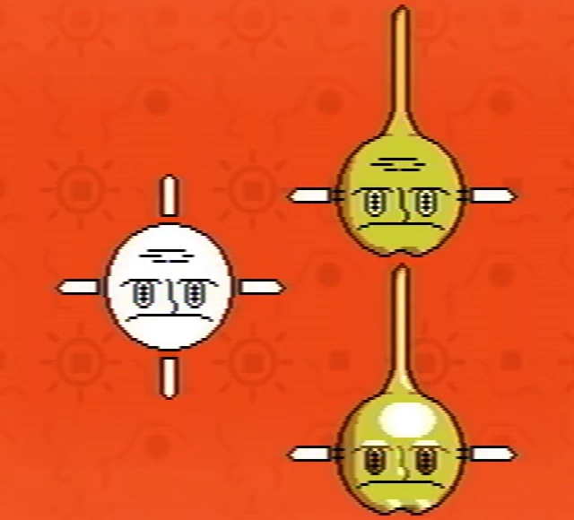

Unused content
This article is about a topic that has no widely accepted interpretation or clear details.
A list of possible unused content in Petscop, from an in-universe perspective.
- Out-of-universe unused content is NOT documented on this page.
List
Wavey functionality

{kind=link}
Assuming from the history image in the Extra Stuff section of the secret menu, Wavey seemingly was going to jump around as a puddle, or other mass of water. It is unsure if this was the original design for the pet's functionality, or an additional action regarding being in the bucket, where he could had jumped out of the bucket towards Randice if not collected quickly enough.
Hudson
{kind=link}

{kind=link}
"Hudson"
Hudson appears to be an unused and unfinished pet design. It is shown in the Extra Stuff section of the hidden menu. Hudson appears to be based off a sun or a satellite.
Hudson's first concept is not colored in and shows him with four spokes.
Hudson's second concept removes two spokes, replacing the top one with a long spike and the bottom one with a chin. The two remaining spokes are now connected with what looks like string.
Hudson's third concept smoothens the forehead, colors in the eyes, and adds shading. The remaining spokes are not colored in yet.
"Work Zone" / Level 2
- Main article: Work Zone

{kind=link}
"Work Zone" or Level 2 was originally hinted by name in the Sound Test, but never visited in the series. It was presumed and later confirmed to be the music playing in Odd Care and older gens of Even Care.
The appearance of Level 2 is shown in Petscop Soundtrack, confirming other suspicions of it being the same area shown in a loading screen from Petscop 20.
bathroom-tomb
The music track "bathroom-tomb" is presented in Petscop Soundtrack, as an unused track for the game. It suggests the prior connection between the dirt column in Randice & Wavey's room and the house bathroom was intended, but unused.
Sound Effects
In the Petscop Soundtrack, there are several sound effects which were not heard anywhere else in the series. They can be heard at the following timestamps in the soundtrack video: 16:00, 39:33, 40:03, 40:54, 41:04, 41:09 and 41:10
Theories
Since Roneth's concept art does not appear to be present in Extra Stuff, it's also possible that Hudson was originally in Roneth's place before being cut, as he was either too big for the bucket or had a design that was too jarring to the artstyle of the game.
The theme of "Work Zone" is not very clear. Some speculate it might have been themed around a construction site or a office building, judging by the name. It might have been also in the empty lot next to the pink building (thought to be Even Care) on the prototype map (08 gift_plane_map) shown in Extra Stuff.
It is speculated that Rainer may have committed suicide in the house bathroom (see Rainer). The track bathroom-tomb may be related to this.